Status: scheme, revision 2, 2026-10-01. Layout accepted by the user; corner changed and rods chosen after the user's decisions (below). Strength numbers are a first sizing only; the full limit-state table comes next.
Changes from revision 1. (1) Unknown beam-bar layers are taken as the least favourable for every check (user decision). The corner type CY with rods under the flange then clashes with the crossing bars, so both corner beams now have their rods over the flange, at two levels: CX at z = +29, CY at z = +56. No part of the scheme depends on which beam bars are on top. (2) Rods 5/8" ASTM A193 B7: F1554 is not stocked in Ecuador, B7 is (section 7). (3) Two closed ties Ø14 at the top of every pedestal, required by ACI 10.7.6.1.5 for the steel column anchor rods; the earlier designs had one tie there.
| Type | Where | Tension rods | Shear rods | Rod lengths | End plate top |
|---|---|---|---|---|---|
| E (edge) | edge columns | z = +29.0, |v| = 40 | z = -201.2, |v| = 28.5 | 466 / 265 | +60 |
| CX (corner, rods low) | corner, beam X | z = +29.0, |v| = 40 | z = -201.2, |v| = 28.5 | 466 / 265 | +60 |
| CY (corner, rods high) | corner, beam Y | z = +56.0, |v| = 40 | z = -157.0, |v| = 28.5 | 466 / 265 | +87 |
E and CX are the same piece. CY differs only in the level of the tension rods and the plates. At a corner either beam can be X; the column hooks are bent along Y.
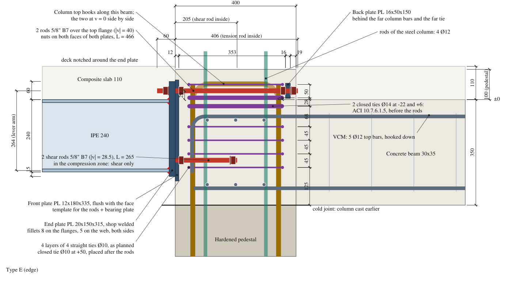
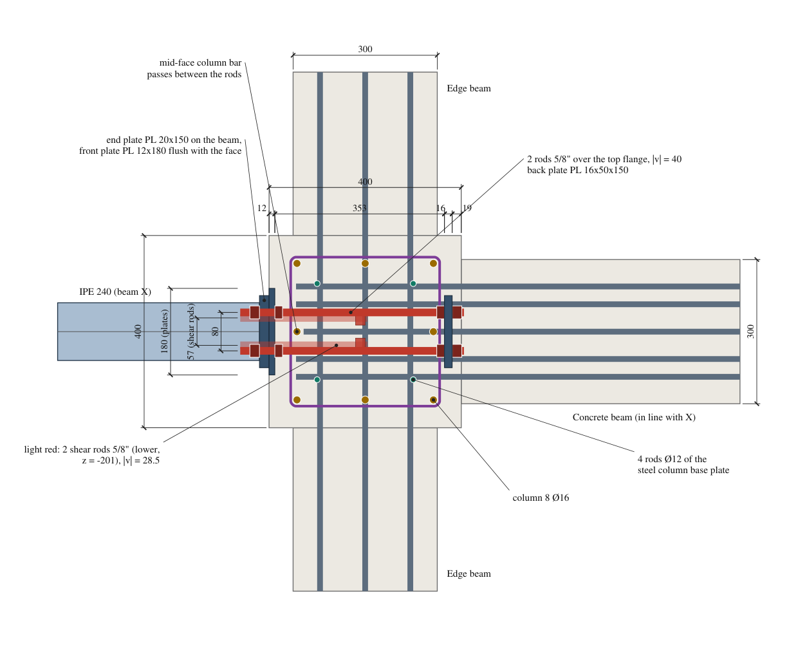
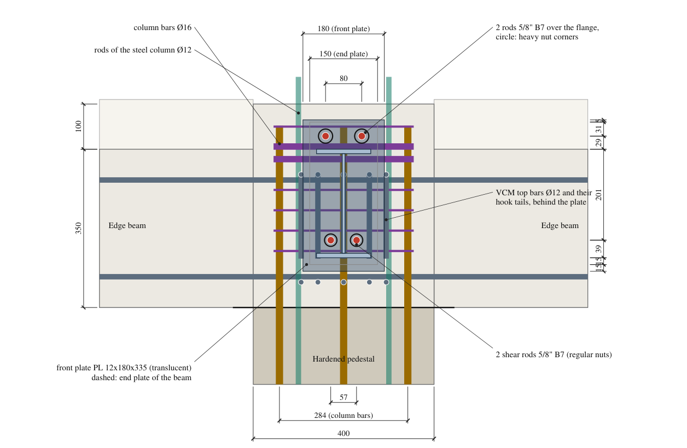
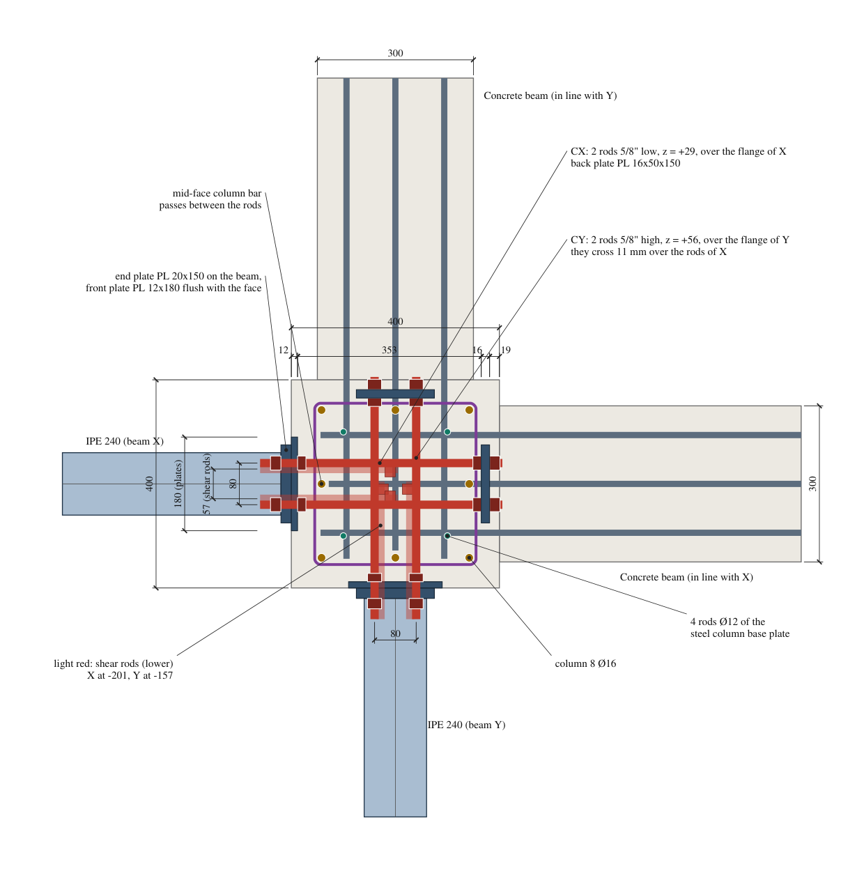
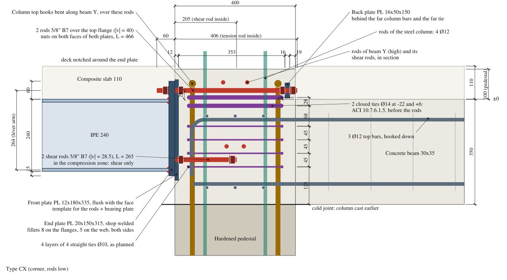
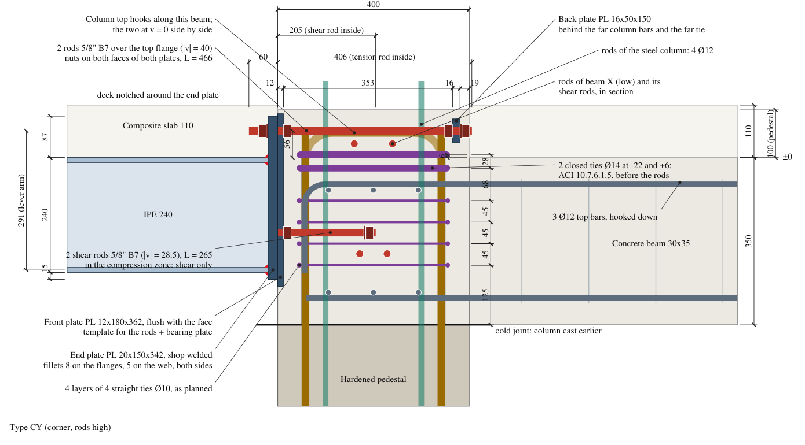
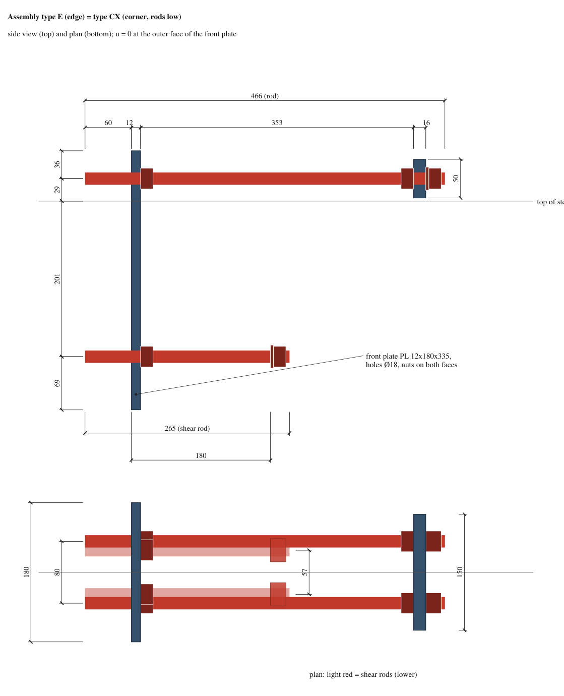
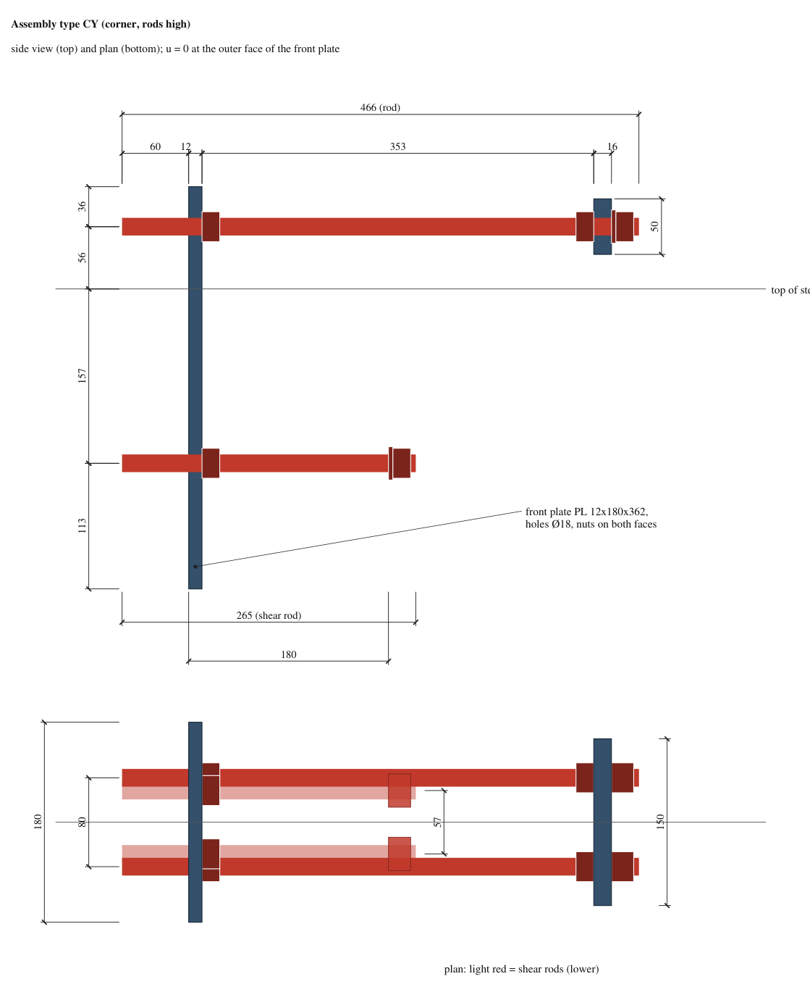
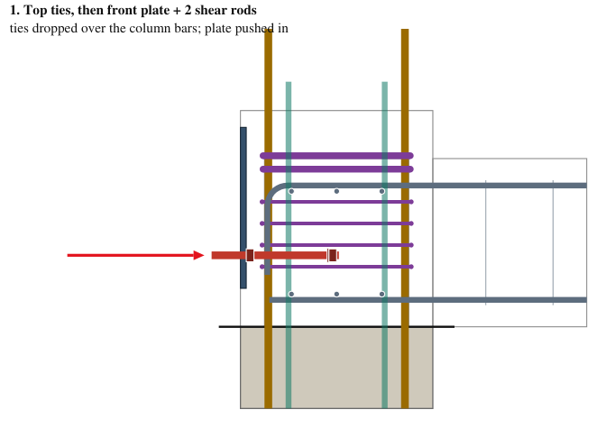
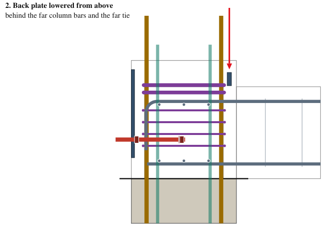
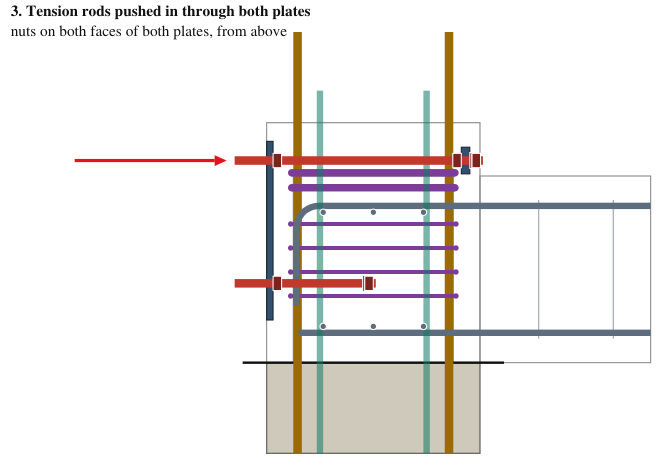
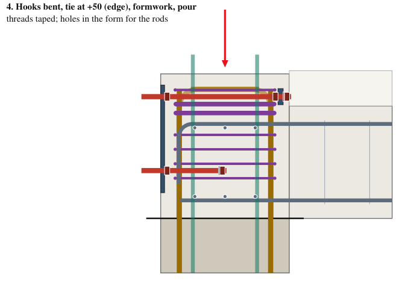
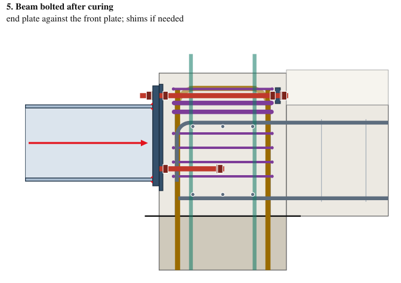
Figure 9. The two top ties go first, dropped over the column bars (the hooks are not bent yet). The shear rods go in from the front, between the joint tie layers. The back plate goes in from above, behind the far ties. The tension rods go in from the front over the top ties; their nuts are reached from above. At the corner, CX first, then CY over it.
Specified: threaded rod ASTM A193 B7, 5/8"-11 UNC (fy 105 ksi = 724 MPa, fu 125 ksi; futa = 860 MPa in ACI 17.6.1.2), heavy hex nuts ASTM A194 2H on the tension rods, regular hex nuts on the shear rods (end-plate side), hardened washers F436. Black finish, threads greased and taped for the pour. Ask for the mill certificate (heat number on the bars).
Why B7. ASTM F1554 (the anchor-rod standard) did not show up in any Ecuadorian catalogue found. B7 is stocked in Ecuador as "varilla roscada negra estructural". It qualifies as a ductile steel element in ACI 318 (elongation 16 %, reduction of area 50 %; ACI asks 14 % and 30 %). The common galvanized "grado 2" rod (A307) has no specified reduction of area, so it would have to be treated as brittle (φ = 0.65): it would still pass the edge (D/C about 0.92), but there is no certificate behind it. Grade 5 rod is an acceptable second choice.
| Supplier | Where | What the web page shows | Contact |
|---|---|---|---|
| BP Ecuador | Cuenca: Panamericana Sur km 3 (Narancay) and Av. Gil Ramírez Dávalos 5-140 (Terminal Terrestre) | inch threaded rod, coarse thread, grade 5, 90 cm and 3.66 m; grade 8 bolts. B7 not listed: ask. | +593 99 515 4029, servicioalcliente@bpecuador.com |
| Importadora Banco del Perno | Cuenca: Av. Huayna Cápac 5-57 y Gran Colombia | bolt importer (directory listing only; stock not checked) | by phone / visit |
| Castillo Hermanos | Quito (ships nationwide) | threaded bars in mm and inch, grade 2 / 5 / structural ASTM B7, natural, black or galvanized | (02) 2475785, ventas@castillohermanos.com |
| Casa del Perno | Sangolquí (Quito) | "varilla roscada negra estructural pulgadas UNC, ASTM A193-B7" | WhatsApp +593 99 851 9040 |
Per assembly: 2 rods 466 mm + 2 rods 265 mm, 16 nuts (10 heavy hex for the tension rods, 6 regular for the shear rods), 8 washers. One 3.66 m bar (12 ft) is enough for two assemblies (2 x 1462 mm). Confirm stock of 5/8" B7 and the heavy nuts by phone before the pour date.
| Between | mm | Note |
|---|---|---|
| Tension rods - mid-face column bars (front and far) | 24.1 | all types |
| Tension rods - rods of the steel column | 46.1 | all types |
| Tension rods - the two mid-face hooks, side by side at v = +-8 (parallel) | 8.1 | E: hooks along the beam; corner: along Y |
| Corner: rods of X - column hooks bent along Y, where they cross | 7.1 | hold point: hooks over the rods of X |
| Corner: rods of X - rods of Y, where they cross | 11.1 | |
| Edge: rods - closed tie 10 at +50 | 8.1 | placed after the rods |
| Top ties 14 at +6 - rods of E, CX | 8.1 | ties placed before the rods |
| Top ties 14: clear between the two | 14.0 | |
| Top tie 14 at -22 - beam top bars (upper layer) | 21.0 | |
| Back plate - far ties (outer face) | 5.0 | the back plate is behind the ties |
| Back plate - far column bars | 15.0 | |
| Back plate, outer face - far face of the column | 19.0 | inside the concrete beam in line (|v| <= 75 < 150) |
| Back plate of E, CX, bottom - beam top bars (upper layer) | 54.0 | |
| Back plate of CY, top - top of the pedestal | 19.0 | |
| Rods of CY, top - top of the pedestal | 36.1 | |
| Shear rods - joint ties at -180 and -225 | 8.3 | E, CX; ties as planned |
| Shear rods CY - joint ties at -135 and -180 | 9.1 | CY; ties as planned |
| Shear rods - hook tails of the beam bars (v = 0 and 57) | 14.6 | VCM pairs separated; 28 or more if not |
| Corner: shear rods of X - shear rods of Y, where they cross | 28.3 | |
| Front plate, inner face - hooks of the beam bars | 38.0 | |
| Front plate, inner face - ties of the pedestal | 28.0 | |
| Front plate of CY, top - top of the pedestal | 8.0 | |
| Heavy nut on the end plate - flange fillet | 5.4 | tension rods: pf = d + 1/2 in |
| Shear-rod nut on the end plate - web fillet | 6.7 | regular hex nut; snug tight is enough |
| Shear-rod nut on the end plate - bottom flange fillet | 7.3 |
Yellow: under 10 mm. None of them depends on a beam bar position any more: the tension rods are all above the beams, the shear rods between the top and bottom bars.
Demands at the column face: edge Mu = 19.05 kN m, Vu = 34.6 kN; corner envelope Mu = 14.75 kN m, Vu = 26.8 kN. Compression at the bottom flange centroid (z = -235.1). Rods 5/8" B7: Ase = 146 mm², futa = 860 MPa. Conservative assumptions: beam bars on the lower layer and 13 mm lower still, 25 mm short at the hooks; corner beams VCS (3 bars); edge VCM pairs in contact (one bar per pair counted).
| Type | Check | Demand | Capacity | D/C |
|---|---|---|---|---|
| E (edge) | Rod steel in tension (17.6.1) | 36.1 kN | 94.2 kN | 0.38 |
| E (edge) | Shear rod steel in shear (17.7.1) | 17.3 kN | 49.0 kN | 0.35 |
| E (edge) | Side-face blowout, group, to the pedestal top (17.6.4) | 72.1 kN | 167.5 kN | 0.43 |
| E (edge) | Anchor reinforcement, 3 top bars of the beam (17.5.2.1) | 72.1 kN | 106.9 kN | 0.67 |
| E (edge) | Beam bars inside the breakout body vs ldh (mm, tolerances on) | 150.0 mm | 196.0 mm | 0.77 |
| E (edge) | Farthest beam bar from a rod vs 0.5 hef (mm, R17.5.2.1) | 122.5 mm | 182.5 mm | 0.67 |
| E (edge) | End plate, cantilever strip fixed at the weld toe | 1.5 kN m | 3.3 kN m | 0.45 |
| CX (corner, rods low) | Rod steel in tension (17.6.1) | 27.9 kN | 94.2 kN | 0.30 |
| CX (corner, rods low) | Shear rod steel in shear (17.7.1) | 13.4 kN | 49.0 kN | 0.27 |
| CX (corner, rods low) | Side-face blowout, group, to the pedestal top (17.6.4) | 55.9 kN | 167.5 kN | 0.33 |
| CX (corner, rods low) | Anchor reinforcement, 3 top bars of the beam (17.5.2.1) | 55.9 kN | 106.9 kN | 0.52 |
| CX (corner, rods low) | Beam bars inside the breakout body vs ldh (mm, tolerances on) | 150.0 mm | 196.0 mm | 0.77 |
| CX (corner, rods low) | Farthest beam bar from a rod vs 0.5 hef (mm, R17.5.2.1) | 122.5 mm | 182.5 mm | 0.67 |
| CX (corner, rods low) | End plate, cantilever strip fixed at the weld toe | 1.2 kN m | 3.3 kN m | 0.35 |
| CY (corner, rods high) | Rod steel in tension (17.6.1) | 25.3 kN | 94.2 kN | 0.27 |
| CY (corner, rods high) | Shear rod steel in shear (17.7.1) | 13.4 kN | 49.0 kN | 0.27 |
| CY (corner, rods high) | Side-face blowout, group, to the pedestal top (17.6.4) | 50.7 kN | 140.0 kN | 0.36 |
| CY (corner, rods high) | Anchor reinforcement, 3 top bars of the beam (17.5.2.1) | 50.7 kN | 106.9 kN | 0.47 |
| CY (corner, rods high) | Beam bars inside the breakout body vs ldh (mm, tolerances on) | 150.0 mm | 178.9 mm | 0.84 |
| CY (corner, rods high) | Farthest beam bar from a rod vs 0.5 hef (mm, R17.5.2.1) | 147.3 mm | 182.5 mm | 0.81 |
| CY (corner, rods high) | End plate, cantilever strip fixed at the weld toe | 2.4 kN m | 3.3 kN m | 0.73 |
Unreinforced concrete breakout of type E (17.6.2, three edges, hef limited to 107): φNcbg = 26.3 kN, far below T = 72.1 kN, so the beam top bars are needed as anchor reinforcement. Governing items now: anchor reinforcement of the edge (0.67, 3 bars counted) and the end plate strip of CY (0.73, lower bound). The rods are no longer critical (0.38).
Seismic: the share of Ev in the anchor tension is 22% (more than 20%, 17.10.5.2). Option 17.10.5.3(d) amplifies only Eh by Ωo; this cantilever has Ev only, so the design combination stands. The anchor reinforcement is INEN 2167 (A706 type), as 17.10.4 requires.
It can be placed with the site as it is, and with the least favourable bar layout. No bar has to be cut or moved. The site only bends the hooks (after the rods), places two extra ties at the top before the rods, and moves the edge closed tie to +50. Nothing waits for the site's answers about the bars.
Main risks: (1) the corner hooks 7 mm over the rods of X (hold point); (2) concrete compaction behind the front plate (vent holes, vibrate from above); (3) protruding threads damaged before bolting; (4) supply of B7 in time.